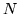

This program is used to smooth a set of context-dependent tied mixture or discrete HMM's using deleted interpolation. The program operates as a replacement for the second pass of HEREST when working in parallel mode17.15. It reads in the  sets of accumulator files containing the statistics accumulated during the first pass and then interpolates the mixture weights between each context dependent model and its corresponding context independent version. The interpolation weights are chosen to maximise the likelihood of each deleted block with respect to the probability distributions estimated from all other blocks.